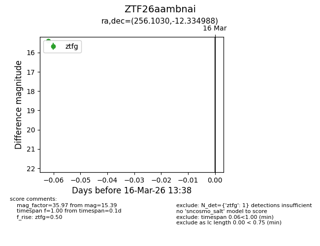
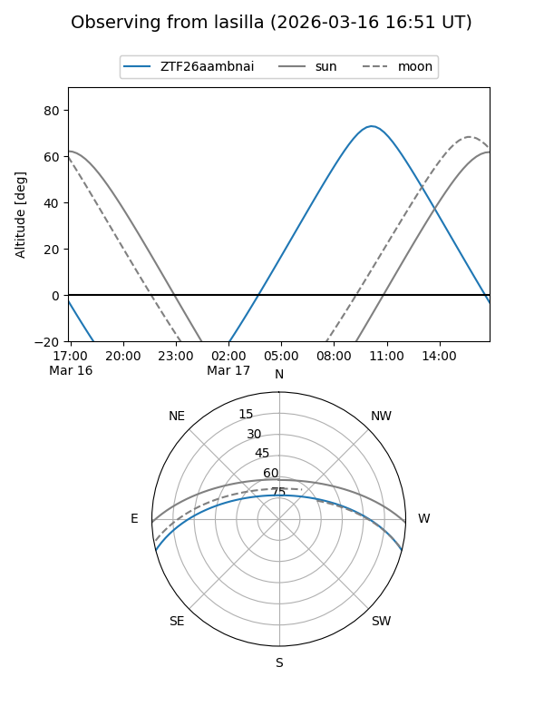
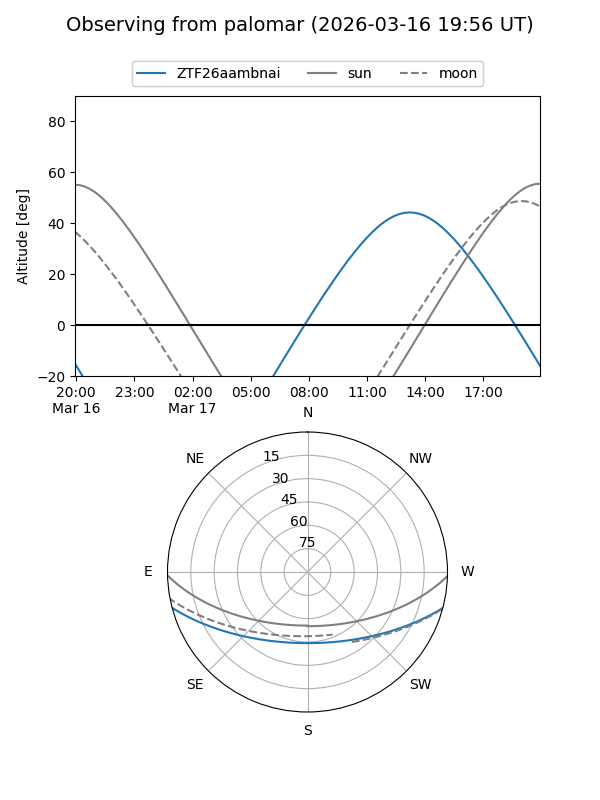

ZTF26aambnai
Target ZTF26aambnai at 2026-03-16 13:40
Aliases and brokers:
FINK: link
Lasair: link
ALeRCE: link
alt names
ZTF26aambnai (ztf,fink_ztf)
Coordinates:
equatorial (ra, dec) = 256.1030,-12.33499
equatorial (HMS+DMS) = 17:04:24.73,-12:20:05.96
galactic (l, b) = (8.8065,+17.09828)
Flags:
Photometry:
last ztfg=15.39
1 ztfg detections
Lightcurve

Visibility


Additional plots